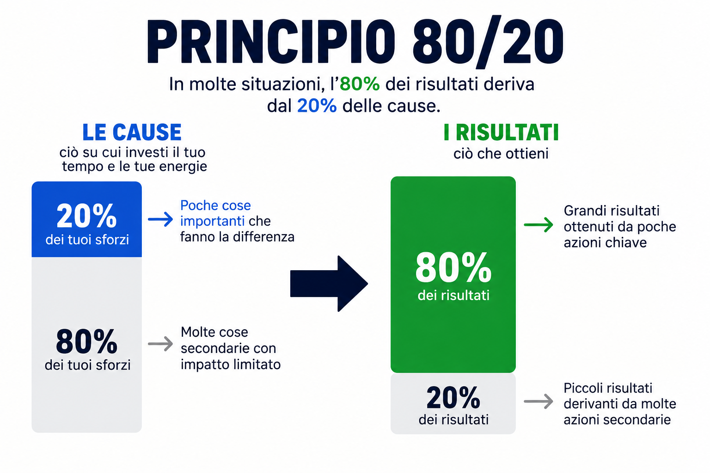

IL PRINCIPIO 80/20
Cercare leve significa individuare le poche azioni che producono il maggior cambiamento. Invece di disperdere energie su tutto, analizzo il sistema per trovare il punto su cui intervenire: quello che, con uno sforzo mirato, fa muovere il resto.

Il mio interesse per il corpo umano inizia 10 anni fa quando per la prima volta misi piede all’interno di una palestra. Da quel giorno ho passato il mio tempo libero a studiare tutto ciò che trovavo riguardo al corpo umano, gli ormoni e tutti i modi possibili di usare i processi corporei a mio vantaggio.
A 19 anni decisi di iscrivermi a Scienze Motorie all’Università di Genova con lo scopo di approfondire queste conoscenze. Non soddisfatto delle informazioni ricevute al termine del secondo anno, ho deciso di cambiare facoltà e iscrivermi a Medicina, che ancora frequento come studente al V anno.
Ad oggi ho quindi 7 anni di formazione universitaria e 10 anni di sperimentazione pratica affiancata agli studi personali. Oggi condivido parte della mia esperienza attraverso il mio canale YouTube MJ Systems e do la possibilità a chi desidera di venire in consulenza strategica 1:1, in cui aiuto i miei assistiti a perseguire il loro miglioramento fisico e mentale.
Grazie al mio lavoro nel mondo della moda come modello ho affinato le mie conoscenze di miglioramento fisico per assecondare tutti gli standard che l’industria mi imponeva. Inoltre, ho approfondito il funzionamento della mente per persuadere i miei interlocutori e migliorare lo studio universitario.
Parliamone